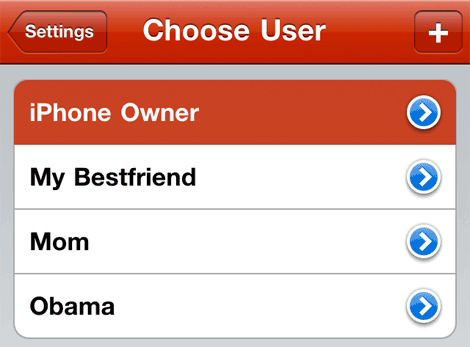

Ever noticed how people like to borrow your iPhone, iPod or iPad? With most programs, their progress data gets mixed with yours. With Chinese Flash you can add as many users as you like, keeping each user's progress data separate.
From the Settings tab press Users. You can select a user by tapping the name.
You can add as many users as you like using the + button. We've added some users to get you started!